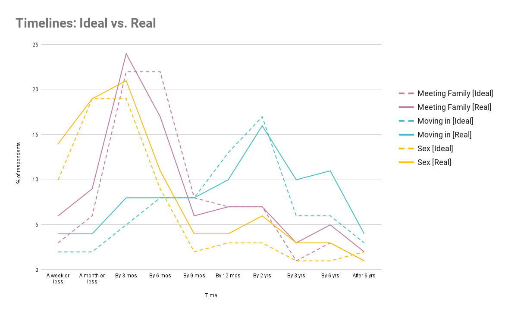
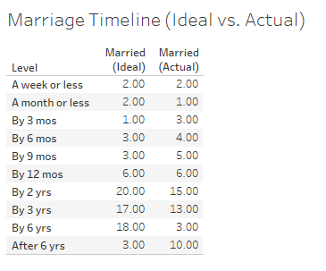
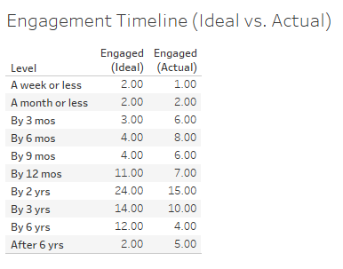

When first beginning to date someone, we've all asked the same questions: when's the right time to become physically intimate? Say "I love you"? Move in together? Get engaged? Answers to these questions will vary widely among cultures and individuals, but one thing is for sure: many of us hold strong opinions on how soon is too soon. In this story, we use data from YouGov's 2021 Relationships study to discover how American adults feel about relationship timelines. Specifically, we explore to what degree people's ideal timelines for common romantic relationship milestones correspond to the decisions they make in their real-life relationships.
First, YouGov surveyed a group of American adults (N = 1323) on their ideal relationship timelines. In other words, at what point "should" a romantic partnership (not necessarily their own) reach milestones such as meeting the parents or getting engaged? The interactive chart below shows what percentage of respondents believe that each milestone should take place by a certain time (ranging from less than a week to more than 6 years). Click each milestone to view its corresponding data.
While opinions on each milestone are strong and varied, we see some clear trends in the data. Most people think physical intimacy should occur earlier in a relationship (by 3 months), while the first couple's vacation should occur by 6 months. Meanwhile, people believe more life-changing milestones such as moving in together or getting engaged should happen after a year or more. Also, quite a few believe that waiting until marriage for certain milestones (such as physical intimacy or pregnancy) is more important than waiting a specific amount of time.
But how does this compare to what timelines these same people actually follow in their relationships? Of the participants
surveyed, 749 (56%) were in a serious relationship at the time of the study. These participants were asked at what point in
their current relationships they actually reached these milestones (if they had at all). In many cases, the "real" timelines corresponded fairly well with the "ideal" ones. See the graph below: people's ideal timelines for physical intimacy, meeting each other's families, and moving in together generally corresponded with the real, reported ones.

As expected from people's reported "ideal" timelines, people generally take steps of physical intimacy and meeting close
friends and family within the first few months of a relationship, while they wait to move in together until a year or mroe has passed. We also observe that the real vs. ideal lines for intimacy and meeting families are closer together than the ones for moving in together. Specifically, we see that couples seem to be actually moving in together later than the "ideal" data would predict. Possibly, since moving in is a much more impactful, important step in a relationship than the other two, couples find that they end up waiting until the relationship has become more solidified.
But are there cases in which people's ideal timelines differed significantly from the real ones? Interestingly, we do see some variation within engagement and marriage timelines. For example, in the table below, we see that most people believe that ideally, engagement should occur should occur between years 1 and 6. However, of the participants who had gotten engaged, most had done it before 3 years, with a full 30% having gotten engaged in their first year. Conversely, if we take a look at the marriage table, we see something else: though most participants believed that ideally, marriage should occur definitely by year 6, a full 10% of participants reported marrying after year 6.


Delving into YouGov's Relationships study illuminates how most U.S. adults approach relationships. It reveals that though we generally move forward with becoming physically intimate, integrating our new partner into our personal lives, and going on trips together within the first few months of a relationship, we wait much longer to consider engagement, marriage, and having children. And although people's ideal timelines for relationship milestones generally match up with their real-world behavior, this is not always the case: while people generally expect to be engaged and married within 3 years, the actual real-world behavior is far more varied. As relationship timelines have certainly evolved over time (it was not too long ago that the average age of first marriage for women was 20), it will be interesting to watch how perceptions of "How soon is too soon?" changes over time.
Visualizations created in D3, Google Sheets, and Tableau, respectively. Click to see data source